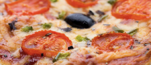

Pizza vegana

Tiempo de preparación: 65'
Dificultad: Mediana
Ingredientes
Para la masa:
- 2 tazas de harina de arroz (blanca o integral)
- 1 taza de harina de garbanzos
- 1/4 taza de semillas de lino molidas
- 1 cucharadita de sal marina
- 1 1/4 tazas de agua a 30º C
- 2 cucharaditas de levadura seca
- 1/3 taza de puré de papa, batata o calabaza
Para los toppings:
- Rúcula y albahaca frescas
- Tomates secos
- Palta
- Aceitunas
- Cebolla disecada
Elaboración paso a paso
- Precalentar el horno al máximo.
- Activar la levadura (se mezcla el aceite, el sirope, el agua y la levadura en un bol y se deja hasta que salgan burbujas, de 3 a 5 minutos).
- En otro bowl colocar las harinas, el lino, la goma xanthan, el puré y la sal.
- Una vez la levadura se activó, agregarla al bol de las harinas.
- Amasar bien hasta integrar.
- Aceitar el molde de pizza.
- Estirar la pizza en el molde, colocarle por encima salsa de tomate y llevar al horno.
- Cocinar por 15 minutos o hasta que esté dorada.
- Una vez cocida la pizza, colocar los toppings por encima y servir.
Para el relleno:
- Lavar bien las hojas de espinaca y saltearlas con un poco de aceite de oliva en una sartén grande. Reservar.
- Picar el ajo y la cebolla y saltearlos también.
- Picar la espinaca salteada y unir con la cebolla y el ajo. Condimentar con ají molido, sal y pimienta a gusto.
- Agregar el bagazo de la leche de almendras previamente condimentado con levadura nutricional, el queso de papa.
Para el armado:
- Retirar los bollos de masa de la heladera y estirarlos con palo de amasar.
- Aceitar y enharinar una tartera y colocar un disco de masa para forrarla. Pinchar con un tenedor y agregar el relleno.
- Colocar el otro disco por encima, como una tapa y unir los bordes formando un repulgue y sellando la tarta.
- Pinchar la superficie con tenedor y llevar a horno moderado a fuerte previamente precalentado.
- Cocinar hasta que se dore.